(Once upon a time) …………… When there were no measuring instruments , electrical parameter like Current was measured on intensity of electric shock. Larger the shock man get ,larger the intensity.
Measurements play an important role in daily life because they are useful to do basic tasks, such as take a child's temperature with a thermometer, make time estimations, measure out medicine and find weights, areas and volumes of different materials or substances.
The instruments, which are used to measure any quantity are known as measuring instruments.
The measuring instrument basically categorized into three types; Electrical Instrument. Electronic Instrument. Mechanical Instrument.
This chapter covers 3 electronic instruments. The measuring, testing and waveform displaying instruments have got very much importance in electronics.
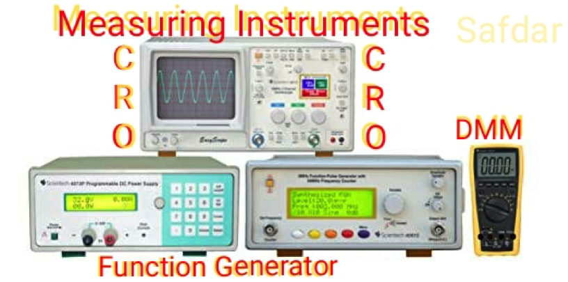
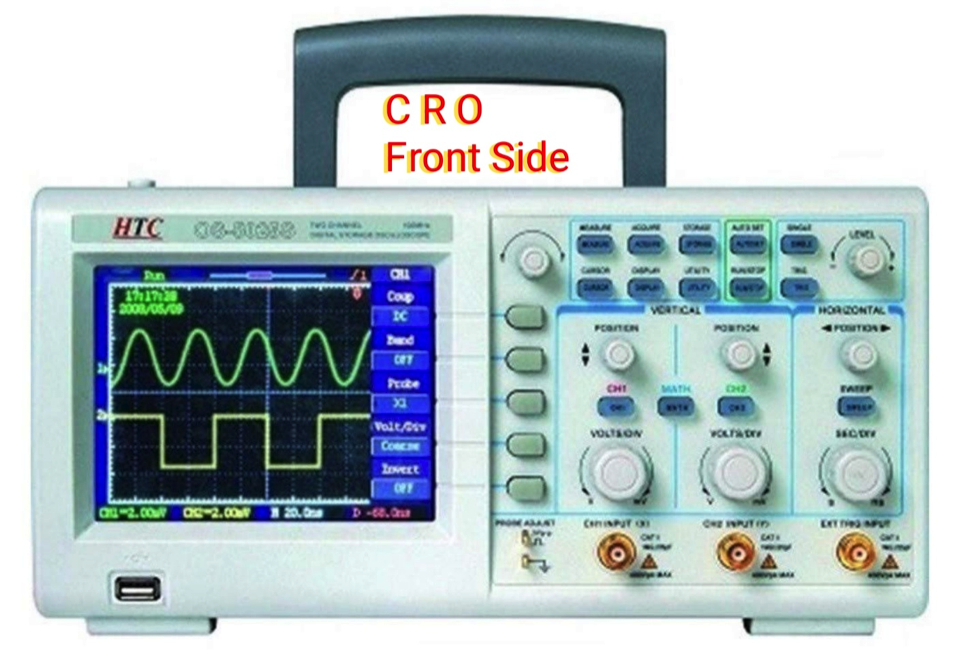
A CRO is an electronic instrument used for studying various electrical & electronic parameters and behaviors. CRO is basically an XY (2 dimensional) plotter which can plot an input signal vs another signal or an input signal vs time. A cathode ray oscilloscope is used to study waveforms, transients, time based or frequency based analysis.
The cathode ray oscilloscope is an extremely useful and versatile laboratory instrument used for studying wave shapes of alternating currents and voltages as well as for meas¬urement of voltage, current, power and frequency, in fact, almost any quantity that involves amplitude and waveform. It allows the user to see the amplitude of electrical signals as a function of time on the screen. It is widely used for trouble shooting radio, TV receivers, amplifiers, oscillator as well as laboratory work involving research and” design. It can also be employed for studying the wave shape of a signal with respect to amplitude distortion and deviation from the normal. In true sense the cathode ray oscilloscope has been one of the most important tools in the design and development of modern electronic circuits.
Before learning CRO, we will look into Cathode Ray Tube (CRT) . CRT is the most important part of cathode ray oscilloscope (CRO). CRTs may be electrostatically or electromagnetically focused or deflected.
The cathode ray tube is an electronic vacuum tube used for displaying electrical data in the form of images or videos on the screen. In 1897, German Physicist Karl Ferdinand Braun invented the cathode ray tube. The cathode ray tube is also known as the Braun’s tube. It is used in electronic devices such as televisions (TV), computer monitors, radar, and oscilloscope tubes. Today the CRT displays were replaced by LCD, LED and plasma displays.
The CRT is a display screen which produces images in the form of the video signal. It is a type of vacuum tube which displays images when the electron beam through electron guns are strikes on the phosphorescent surface. In other Words, the CRT generates the beams, accelerates it at high velocity and deflect it for creating the images on the phosphorous screen so that the beam becomes visible.
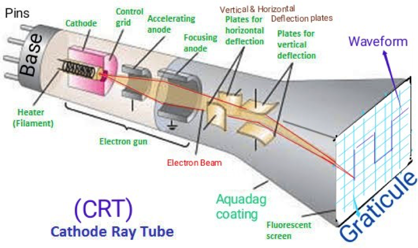
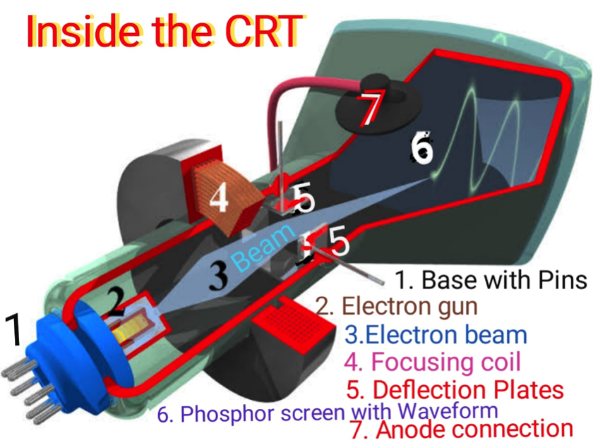
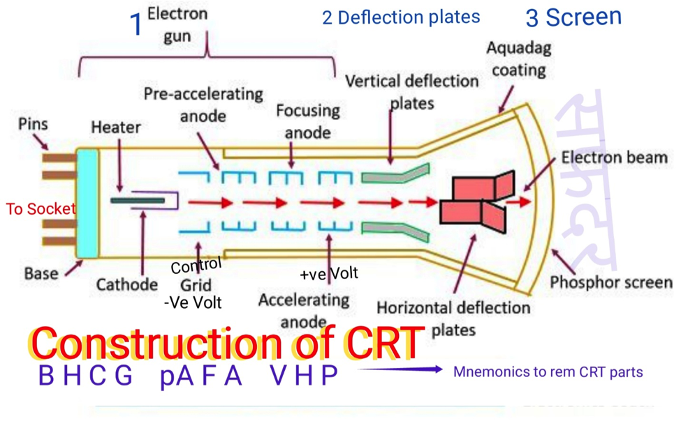
The Electron Gun Assembly, Deflection Plate Assembly, Fluorescent Screen, Glass Envelope, Base are the important parts of the CRT. The electron gun emits the electron beam, and through deflecting plates, it is strikes on the phosphorous screen. The detail explanation of their parts is explained below.
The electron gun is the source of the electron beams. The electron gun has a heater, cathode, grid, pre-accelerating anode, focussing anode and accelerating anode. The electrons are emitted from the highly emitted cathode. The cathode is cylindrical in shape, and at the end of it, the layer of strontium and barium oxide is deposited which emit the high emission of electrons at the end of the tube.
The electron passes through the electron in the small grid. This control grid is made up of nickel material with a centrally located hole which is coaxial with the CRT axis. The electron which is emitted from the electron gun and passes through the control grid have high positive potential which is applied across the pre-accelerating and accelerating anodes.
The beam is focused by focussing anode. The accelerating and focussing electrodes are cylindrical in shape which has a small opening in the centre of each electrode. After exiting the focussing anode, the beams passes through the vertical and horizontal deflecting plates.
The pre-accelerating and accelerating anode are connected to the positive high voltage of about 1500V and the focussing anode are connected to the lower voltage of about 500V.
There are two methods of focussing the electron beam.
The CRO uses an electrostatic focussing tube.
The electron gun again internally consists of five components. They are:
A. Heater
B. Cathode
C. Control grid
D. Accelerating anode.
E. Focussing anode
The deflection plate produces the uniform electrostatic field only in the one direction. The electron beam entering into the deflection plates will accelerate only in the one direction, and hence electrons will not move in the other directions.
Horizontal deflection plates : The horizontal deflection plates deflects the electrons horizontally. They are mounted in vacuum tube vertically.
Vertical deflection plates : The vertical deflection plates deflects the electrons vertically. They are mounted in vacuum tube horizontally.
Both the horizontal and vertical deflection plates controls the path of electrons beam so that it can be directed towards a specified positions on the phosphor-coated screen.
Fluorescent screen is a transparent screen coated on one side with a phosphor that glows brightly when exposed to cathode rays. The front of the CRT is called the face plate. The face plate of the CRT is made up of entirely fibre optics which has special characteristics. The internal surface of the faceplate is coated with the phosphor. The phosphorous converts the electrical energy into light energy. The energy level of the phosphorous crystal raises when the electron beams strike on it. This phenomenon is called cathode luminescence.
The light which is emitted through phosphorous excitation is called fluorescence. When the electron beam stop, the phosphorous crystal regain their original position and release a quantum of light energy which is called phosphorescence or persistence.
The whole assembly is protected in a conical highly evacuated glass housing through suitable supports. Very heavy glass is used for the face. The inner walls of CRT between neck and screen are usually coated with a conducting material known as aquadag and this coating is electrically connected to the accelerating anode. The coating is provided in order to accelerate the electron beam after passing between the deflecting plates and to collect the electrons produced by secondary emission when electron beam strikes the screen. Thus the coating prevents the formation of – ve charge on the screen and state of equilibrium of screen is maintained. It helps the electron to be the focus. Horizontal and vertical marks are marked on the screen of the CRT to provide user a correct measurement. These marks, usually in rectangular form, are called graticule.
The elements of the electron gun assembly are connected to pins on the CRT base. Operating voltage of a CRT may vary from 500 to 33,000 V.
Electrostatic deflection is the method of aligning the path of charged particles by applying the electric field between the deflecting plates. The word electrostatic means the strength and the direction of the field changes concerning time. So the particles will move only in one direction.
The cathode ray tube uses deflecting plates for modifying the path of electrons. The electrons after exiting through the electron gun pass through deflecting plates. The CRT uses vertical and horizontal plates for focussing the electron beam.
The vertical plate produces an electrical field in the horizontal plane and causes horizontal deflection. The other pair is mounted horizontally and generates an electric field in the vertical plane and causes vertical deflection. These plates allow the beam to pass through the deflecting plates without striking them.
Electrostatic Deflection ArrangementThe general arrangement of the electrostatic deflection is shown in the figure below. The A and B are the two parallel plates between which the potential difference is applied. These deflection plates produce the uniform electrostatic field in the Y direction.
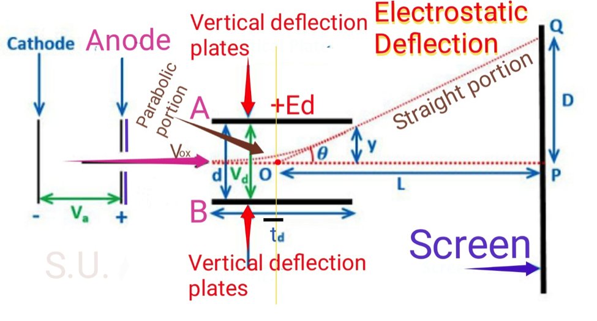
The electron enters between the plates experienced the force only in the Y direction, and the electron will move only in that direction. There is no force either in X direction or the Z direction. Hence, no acceleration of electrons occurs in that direction.
In a general purpose CRO electrostatic method of deflection of the electron beam is employed. The beam is deflected by applying voltages in two pairs of deflecting plates right angled to each other, a pair of plates for hori¬zontal deflection and the other pair for vertical deflection. The deflection of the spot on the screen due to 1 volt dc voltage applied to the deflection plates is known as the deflection sen¬sitivity (S).
S = D / Ed
Unit : m/V
Where, D = Deflection on fluorescent screen (m)
And Ed = Deflection Voltage (volts).
In this type, the deflection plates are not present. Deflection coils wound on an assembly called as ‘’yoke’’ are placed about the neck of the CRT. The deflection yoke has two sets of coils, one pair is for horizontal deflection and second pair is for vertical deflection.
Magnetically deflected CRTs are used in radar indicators and television picture tubes.
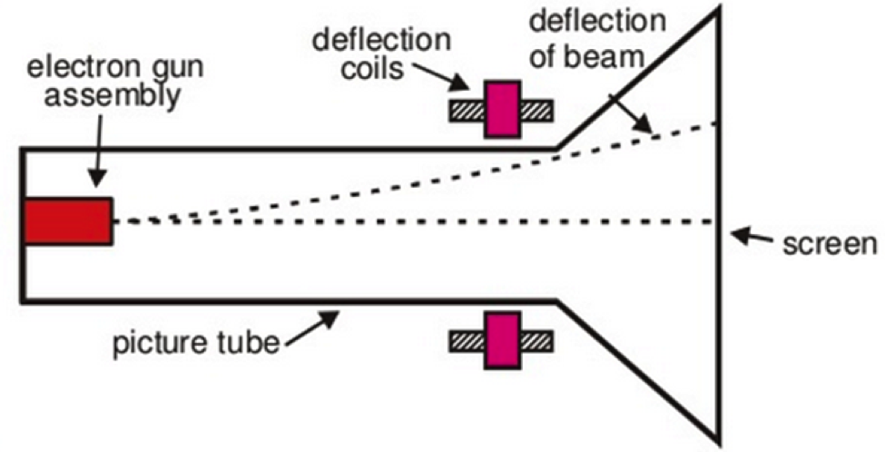
The cathode ray oscilloscope (CRO) is a type of electrical instrument which is used for showing the measurement and analysis of waveforms and others electronic and electrical phenomenon. It is a very fast X-Y plotter shows the input signal versus another signal or versus time. The CROs are used to analyze the waveforms, transient, phenomena, and other time-varying quantities from a very low-frequency range to the radio frequencies.
The CRO is mainly operated on voltages. Thus, the other physical quantity like current, strain, acceleration, pressure, are converted into the voltage with the help of the transducer and thus represent on a CRO. It is also used for knowing the waveforms, transient phenomenon, and other time-varying quantity from a very low-frequency range to the radio frequencies.
The CRO has Stylus (i.e., a luminous spot) which move over the display area in response to an input voltage. This luminous spot is produced by a beam of electrons striking on a fluorescent screen. The normal form of the CRO uses a horizontal input voltage which is an internally generated ramp voltage called “time base”.
The horizontal voltage moves the luminous spot periodically in a horizontal direction from left to right over the display area or screen. The vertical voltage is the voltage under investigation. The vertical voltage moves the luminous spot up and down on the screen. When the input voltage moves very fast on the screen, the display on the screen appears stationary. Thus, CRO provides a means of the visualizing time-varying voltage.
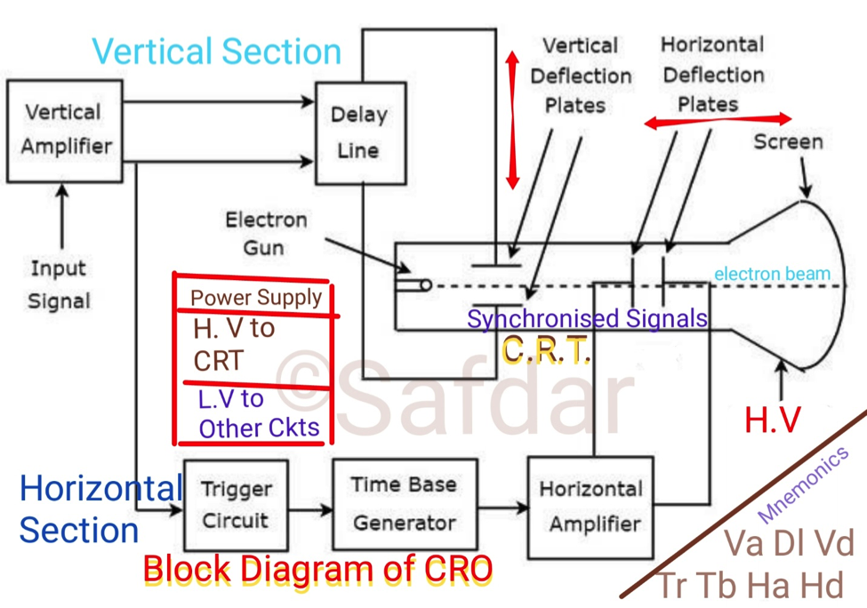
Cathode Ray Tube - It is the heart of the oscilloscope. When the electrons emitted by the electron gun strikes the phosphor screen, a visual signal is displayed on the CRT.
Vertical Amplifier - The input signals are amplified by the vertical amplifier. Usually, the vertical amplifier is a wide band amplifier which passes the entire band of frequencies.
Delay Line - As the name suggests, this circuit is used to delay the signal for a period of time in the vertical section of CRT. The input signal is not applied directly to the vertical plates because the part of the signal gets lost, when the delay time is not used. Therefore, the input signal is delayed by a period of time so that signals to horizontal and vertical deflection plates reach simultaneously.
Time Base (Sweep) Generator - Time base circuit uses a uni-junction transistor (UJT), which is used to produce the sweep. The saw tooth voltage produced by the time base circuit is required to deflect the beam in the horizontal section. The spot is deflected by the saw tooth voltage at a constant time dependent rate.
Horizontal Amplifier - The saw tooth voltage produced by the time base circuit is amplified by the horizontal amplifier before it is applied to horizontal deflection plates.
Trigger Circuit - The signals which are used to activate the trigger circuit are converted to trigger pulses for the precision sweep operation whose amplitude is uniform. Hence input signal and the sweep frequency can be synchronized.
Power supply - The voltages required by CRT, horizontal amplifier, and vertical amplifier are provided by the power supply block. It is classified into two types -
Functioning :
Role of sweep in CRO :
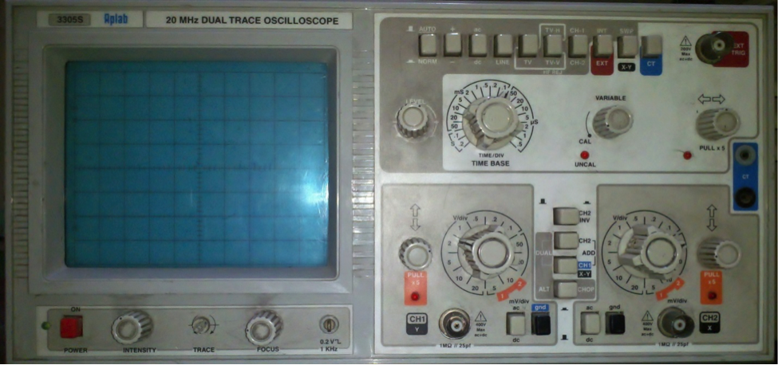
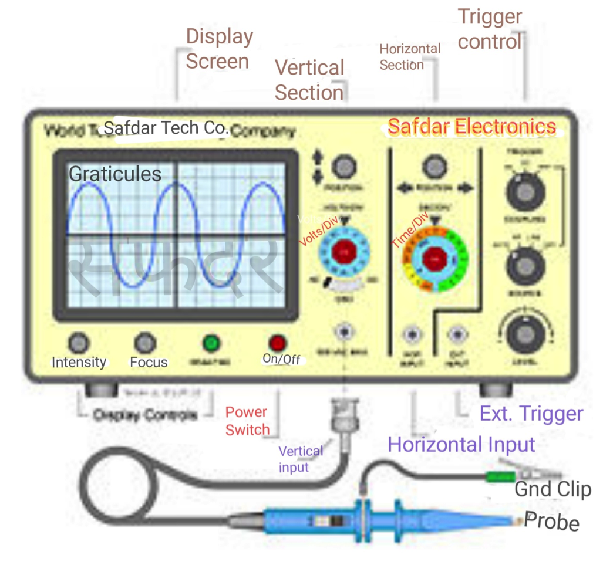
We shall study some important applications of CRO , such as :
To do this, the signal under study is applied to vertical input terminals i.e. the ertical deflection plates of the oscilloscope.
The sweep circuit is set to internal so that sawtooth wave is applied to the horizontal input terminals i.e. the horizontal deflection plates.
Then various controls are adjusted to get sharp and well defined signal waveform on the screen.
Fig below shows the circuit for studying the performance of an audio frequency amplifier.
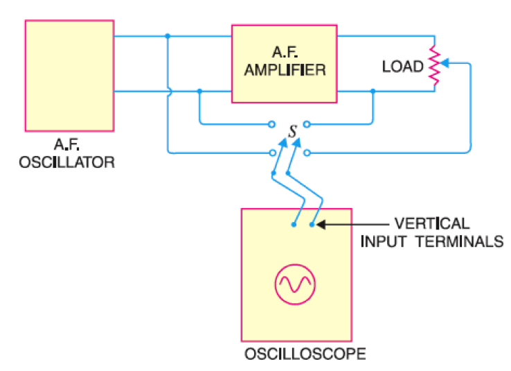
With the help of switch S, the output and input of amplifier is applied in turn to the vertical input terminals of the CRO . I f the waveforms are identical in shape, the fidelity of the amplifier is excellent.
Applying Signal Across Vertical Plates
When a sinusoidal voltage is applied to the vertical deflection plates, it makes the plates alternately positive and negative. Thus, in the positive half cycle, upper plate is positive and lower plate is negative and in the negative half cycle, the plate polarities are reversed.
As a result, the spot moves up and down at the same rate as the frequency of the applied voltage.
Since the frequency of the applied voltage is 50 Hz, hence we will see a continuous vertical line 2-1-4 on the screen as shown in fig below. This line gives no indication of the manner in which the voltage is alternating hence we can not get the wave shape.
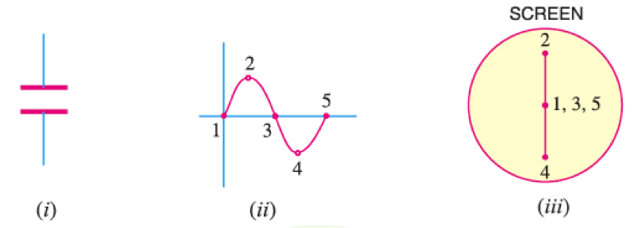
Applying Saw-tooth Wave Across Horizontal Plates
To see the signal voltage variation with time on screen we have to move the beam horizontally from left to right at a uniform speed while it is moving up and down.
Again as soon as a full cycle of the signal is traced, the beam should return quickly to the left hand side of the screen so that it can start tracing the second cycle.
In order to move the beam from left to right at a uniform rate, a voltage that varies linearly with time should be applied to the horizontal plates. This can be achieved by applying a saw tooth wave as shown in fig below.
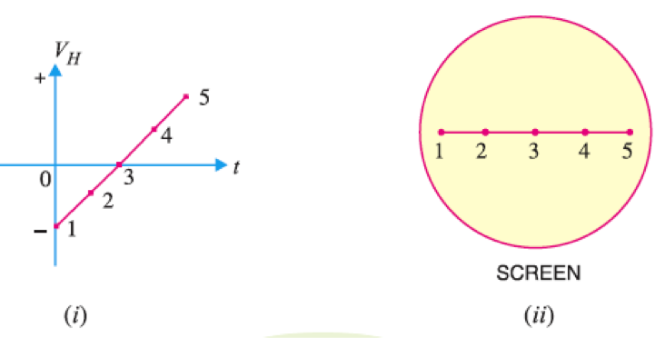
At time t=0, the negative voltage on the horizontal plate keep the beam to the extreme left on the screen as shown in the above figure .
As the time progresses, the negative voltage decreases linearly with time and the beam moves towards right forming a horizontal line. In this way, the saw tooth wave applied to horizontal plates moves the beam from left to right at a uniform rate.
Signal Pattern on Screen
When the signal voltage is applied to the vertical plates and saw-tooth wave to the horizontal plates,we get the exact pattern of the signal on the screen as shown in fig. below.
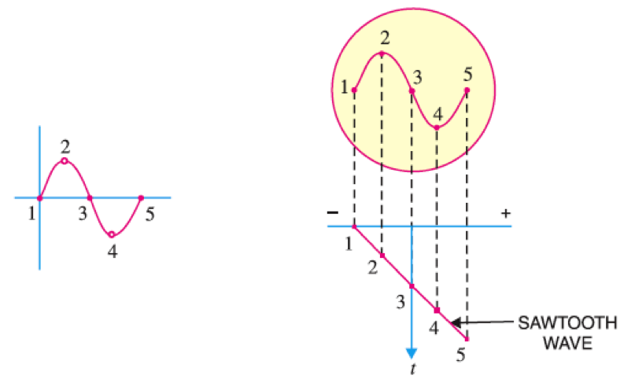
When the signal is at the instant 1, its amplitude is zero, and at this instant maximum negative voltage is applied to the horizontal plates. As a result the beam appears at extreme left on the screen as shown in fig.
When the signal is at instant 2, its amplitude is maximum, but the negative voltage on the horizontal plates is decreased at this instant. Hence, the beam is deflected upwards by the signal and towards right by the saw tooth wave. As a result, the beam strikes the screen at 2.
In a similar manner, the beam strikes the screen at 3,4 and 5 and we get the exact pattern of the signal on the screen.
As we have already discussed, when the signal is applied to the vertical deflection plates only, a vertical line appears on the screen.
The height of the line is proportional to the peak-to-peak voltage of the applied signal.
To measure the voltage on CRO, the following steps are followed :
Using a CRO , the unknown frequency can be accurately determined following the below steps :
To understand this better, let us take an example.
Suppose during the frequency measurement test, a pattern as shown in fig. below is obtained.
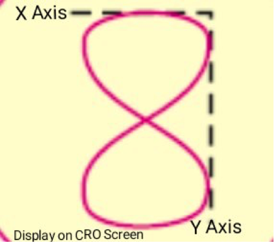
Let us assume that frequency applied to the horizontal plate is 2000 Hz.
Now, if we draw horizontal and vertical lines, we can see that one loop is cut by the horizontal line and
two lops are cut by the vertical line.
Therefore,
fV /fH= 1/2
Or, fV /2000= 1/2
Or, fV = 2000× 1/2 = 1000 Hz
Hence unknown frequency is 1000 Hz.
Most of the CROs has two channels. We can apply two different signals at a time on the CRO. And we can measure easily the phase difference between the two different signals. Lissajous figures in the CRO screen helps us to measure the phase difference between two signals.
Phase Measurement Techniques:
Direct Oscilloscope Methods
Cathode-ray oscilloscopes (CROs) provide a simple means for measuring the phase difference between two sinusoidal signals. The most straightforward approach to use is direct measurement; that is, the signal of interest is applied to the vertical input of the CRO and an automatic time sweep is applied to the horizontal trace. The phase difference is the time delay between the two waveforms measured as a fraction of the period. The result is expressed as a fraction of 360° or of 2π radians; that is, if the time delay is 1/4 of the period, then the phase difference is 1/4 of 360° = 90° (see Figure 41.2). If the waveforms are not sinusoidal but are periodic, the same procedure can still be applied. The phase difference is just expressed as a fraction of the period or as a fractional part of 360°.
Care must be taken with direct oscilloscope methods if noise is present. In particular, the noise can cause triggering difficulties that would make it difficult to accurately determine the period and/or the time delay between two different waveforms. The “HF reject” option, if available, will alleviate the triggering problems.
Lissajous Figures
Lissajous figures are sometimes used for the measurement of phase. They are produced in an oscilloscope by connecting one signal to the vertical trace and the other to the horizontal trace. If the ratio of the first frequency to the second is a rational number (i.e., it is equal to one small integer divided by another), then a closed curve will be observed on the CRO (see Following figures 1 & 2.)
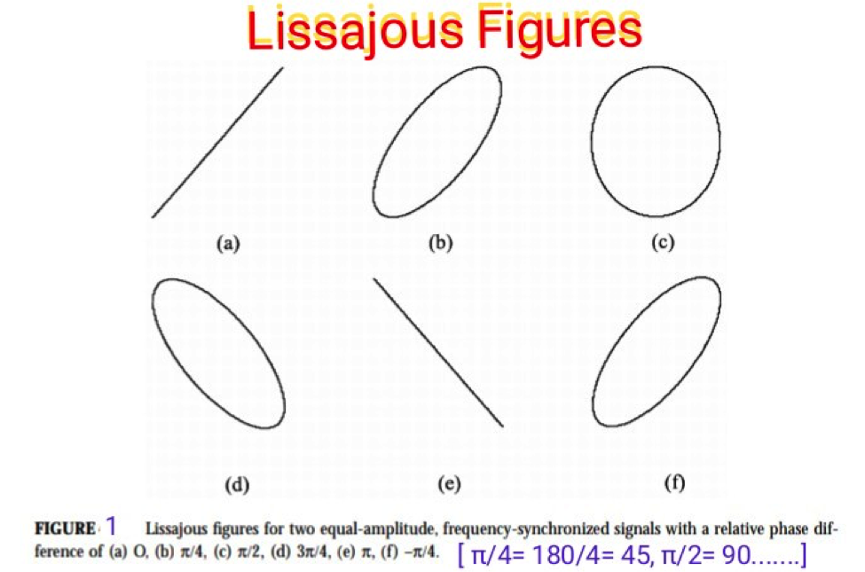
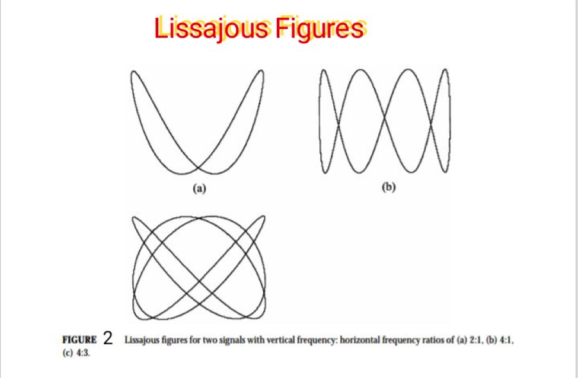
If the two frequencies are unrelated, then there will be only a patch of light observed because of the persistence of the oscilloscope screen.
If the two signals have the same frequency, then the Lissajous figure will assume the shape of an ellipse. The ellipse’s shape will vary according to the the phase difference between the two signals, and according to the ratio of the amplitudes of the two signals. Figure 41.6 shows some figures for two signals with synchronized frequency and equal amplitudes, but different phase relationships. The formula used for determining the phase is:
where H is half the maximum vertical height of the ellipse and Y is the intercept on the y-axis.
Following figure shows some figures for two signals that are identical in frequency and have a phase difference of 45°, but with different amplitude ratios. Note that it is necessary to know the direction that the Lissajous trace is moving in order to determine the sign of the phase difference.
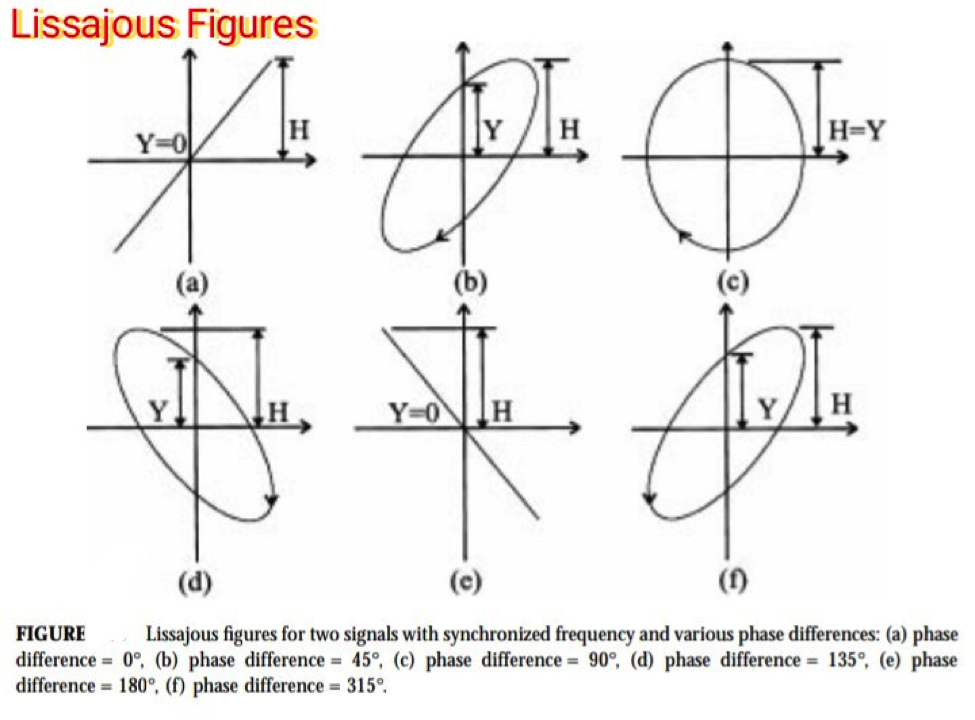
A function generator is a signal source that has the capability of producing different types of waveforms as its output signal. The most common output waveforms are sine-waves, triangular waves, square waves, and sawtooth waves. The frequencies of such waveforms may be adjusted from a fraction of a hertz to several hundred kHz.
Actually, the function generators are very versatile instruments as they are capable of producing a wide variety of waveforms and frequencies. In fact, each of the waveforms they generate is particularly suitable for a different group of applications. The uses of sinusoidal outputs and square-wave outputs have already been described in the earlier Arts. The triangular-wave and sawtooth wave outputs of function generators are commonly used for those applications which need a signal that increases (or reduces) at a specific linear rate. They are also used in driving sweep oscillators in oscilloscopes and the X-axis of X-Y recorders.
Many function generators are also capable of generating two different waveforms simultaneously (from different output terminals, of course). This can be a useful feature when two generated signals are required for a particular application. For instance, by provid¬ing a square wave for linearity measurements in an audio-system, a simultaneous sawtooth output may be used to drive the horizontal deflection amplifier of an oscilloscope, providing a visual display of the measurement result. For another example, a triangular-wave and a sine-wave of equal frequencies can be produced simultaneously. If the zero crossings of both the waves are made to occur at the same time, a linearly varying waveform is available which can be started at the point of zero phase of a sine-wave.
Another important feature of some function generators is their capability of phase-locking to an external signal source. One function generator may be used to phase lock a second function generator, and the two output signals can be displaced in phase by an adjustable amount. In addition, one function generator may be phase locked to a harmonic of the sine-wave of another function generator. By adjustment of the phase and the amplitude of the harmonics, almost any waveform may be produced by the summation of the fundamental frequency generated by one function generator and the harmonic generated by the other function generator. The function generator can also be phase locked to an accurate fre¬quency standard, and all its output waveforms will have the same frequency, stability, and accuracy as the standard.
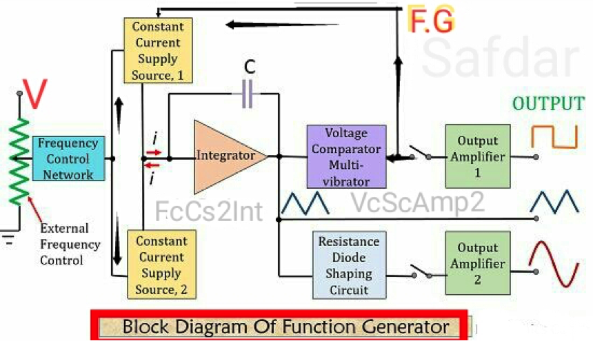
The block diagram of a function generator is given in the figure. In this instrument, the frequency is controlled by varying the magnitude of the current that drives the integrator. This instrument provides different types of waveforms (such as sinusoidal, triangular and square waves) as its output signal with a frequency range of 0.01 Hz to 100 kHz.
The frequency controlled voltage regulates two current supply sources. Current supply source 1 supplies a constant current to the integrator whose output voltage rises linearly with time. An increase or decrease in the current increases or reduces the slope of the output voltage and thus controls the frequency.
The voltage comparator multivibrator changes state at a predetermined maximum level, of the integrator output voltage. This change cuts-off the current supply from supply source 1 and switches to the supply source 2. The current supply source 2 supplies a reverse current to the integrator so that its output drops linearly with time. When the output attains a pre¬determined level, the voltage comparator again changes state and switches on to the current supply source. The output of the integrator is a triangular wave whose frequency depends on the current supplied by the constant current supply sources. The comparator output provides a square wave of the same frequency as output. The resistance diode network changes the slope of the triangular wave as its amplitude changes and produces a sinusoidal wave with less than 1% distortion.
A digital Multimeter, DMM is a test instrument used to measure electrical values including voltage, current and resistance, although modern DMMs often make many more measurements.
A digital Multimeter or DMM is one of the most widely used pieces of test equipment today. DMMs are available very cheaply and these digital multimeters can provide very high degrees of accuracy when measuring the parameters within an electronics or electrical circuit. As a result, DMMs are one of the most indispensable pieces of test equipment available today.
Originally analogue multimeters were used, but these are only rarely used these days as digital technology has made digital multimeters cheaper, far more accurate and capable of providing many more capabilities beyond just measuring current, voltage and resistance.
Digital multimeters or DMMs can measure a variety of different parameters within an electrical circuit. The basic DMMs can measure amps, volts and ohms, as the older analogue meters did, but with the ease of incorporating further functionality into an integrated circuit, many digital multimeters are able to make a number of other measurements as well.
Many of them include functions such as frequency, continuity (with a buzzer to facilitate easy measurements when looking at the circuit board), capacitance, temperature and often a number of other measurements as well.
Typical DMM controls and connections
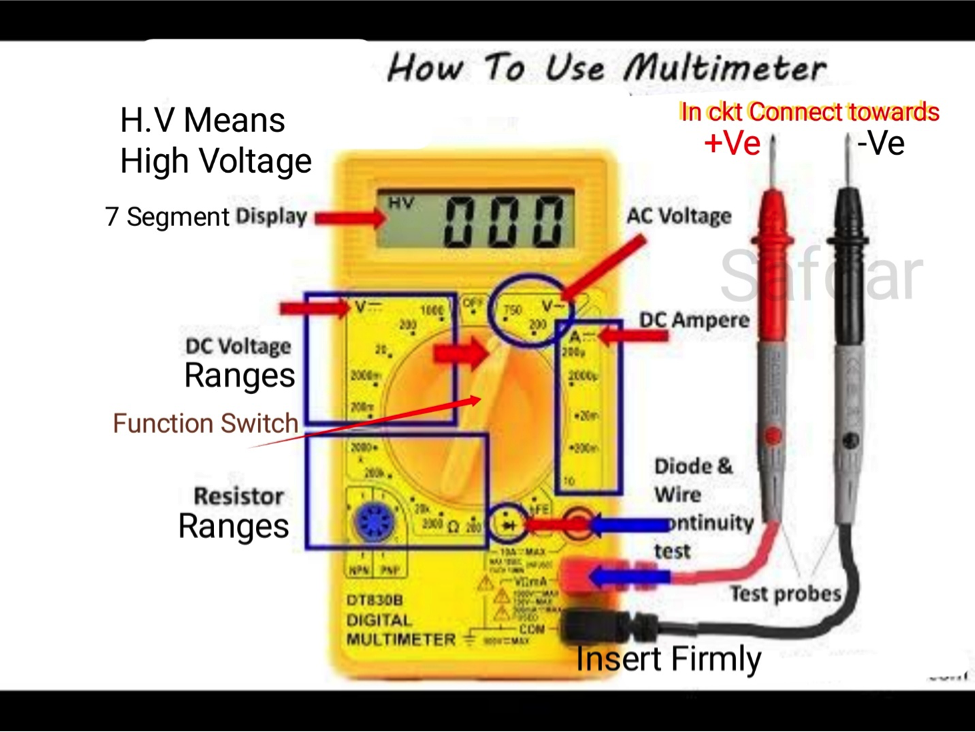
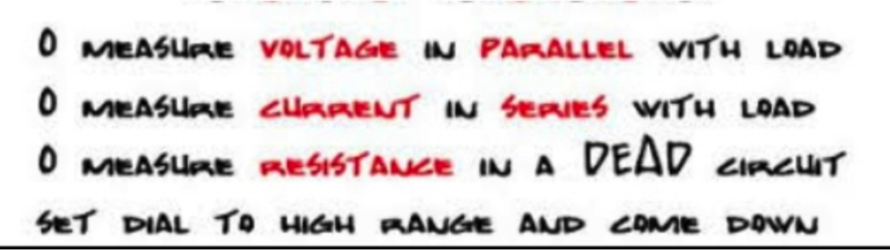
The interfaces on the front of a digital multimeters are normally very straightforward. They consist of a number of items:
These are typical connections for a multimeters and each model of multimeter may have its own requirements and connections.
The switches and controls are normally set out with the main range switch occupying the central position within the multimeter panel. The display typically occupies a position at the top of the instrument so that it is easy to see and it is free from being obscured by leads and also it can still be seen if the switch is being operated.
Any additional switches are typically located around the main switch where they can be reached very easily.
The connections for the test leads are normally located at the bottom of the front panel of the meter. In this way that can be reached easily, but the leads do not obstruct the operation and view of the switches and the display.
The operation of a DMM itself is normally very straightforward. With a knowledge of how to make voltage, current and resistance measurements it is then a matter of putting the multimeter to use.
If the meter is new then it will obviously be necessary to install a battery to power it. This is normally simple and straightforward and details can be found in the operating instructions for the DMM.
When using the meter it is possible to follow a number of simple steps:
When making any measurements it is necessary to be careful not to let the test probes slip as it might be possible to short connections on the circuit under test. In extreme circumstances this could cause a power short circuit, or damage the board.
Normally, when probing board, connections are sufficiently far apart for this not to be a problem, but care should be taken particularly when dealing with high voltage and high current circuits.
There are a number of elements that contribute to what may loosely be termed accuracy. Two of the major constituents are the resolution and the actual accuracy of the measurement system
Although the accuracy of a digital multimeter will be much greater than that of a analogue multimeter, it helps to understand the difference between the accuracy and resolution.
Digital multimeters are very versatile test instruments. With the development of digital technology, many meters are able to provide additional measurements beyond those of the basic voltage current and resistance. When buying a digital multimeter it is worth selecting one that can measure parameters that could be envisaged to be needed.
Digital multimeters are able to make very accurate measurements and display them so that they are easily read.
A digital multimeter (DMM) is a multifunctional meter that displays its electrical quantitative values on an LCD screen. A digital multimeter much like an analog meter, it is able to read voltage, current, and resistance. What makes a digital multimeter differ from the analog meter is its ability to display measured electrical values quickly without any computations. Because of its design, a processor can be built into the meter which allows the user to take measurements of frequency, the inductance of a coil, capacitance of a capacitor, and a host of other high functional electrical measurements. There two types of digital multimeters (DMM): scalable digital multimeter and auto-ranging digital multimeter as shown in Figure.
When working with the scalable digital multimeter you need to have an idea of the value of voltage, current, or resistance that you are attempting to measure. Failure to observe these values will result in inaccurate readings and possible damage to the meter. The auto-ranging digital multimeter is more widely used due to its ease, high functionality, and quick display readings achieved without the user completing the calculations.
The auto-ranging digital multimeter (DMM) only requires you to choose your electrical quantity you are attempting to measure, make sure you are properly placing your leads into the correct terminals and then reading the LCD display. Auto-ranging digital multimeters allow technicians to spend more time getting to the root of a problem instead of switching and calculating.
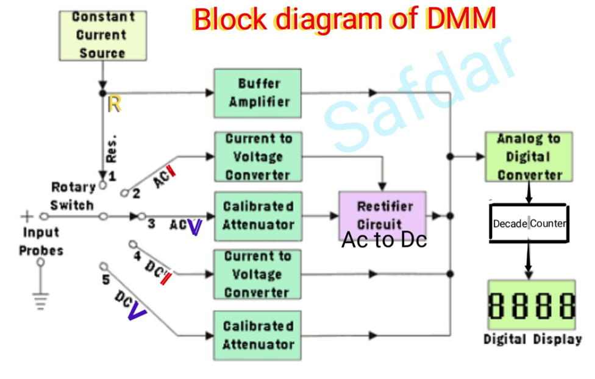